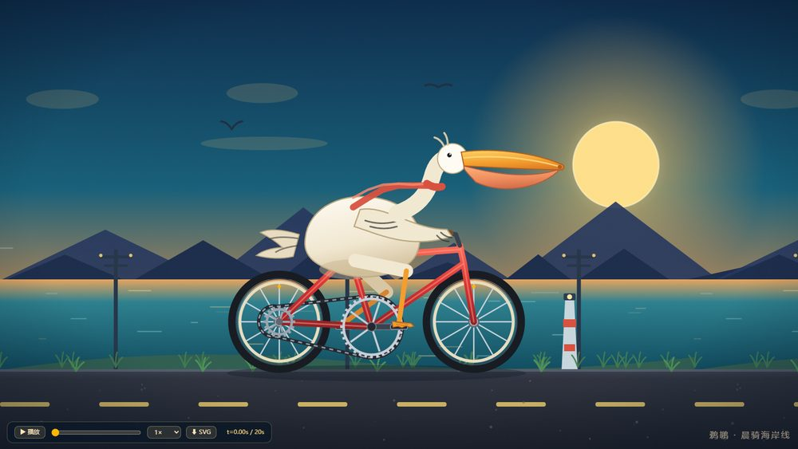
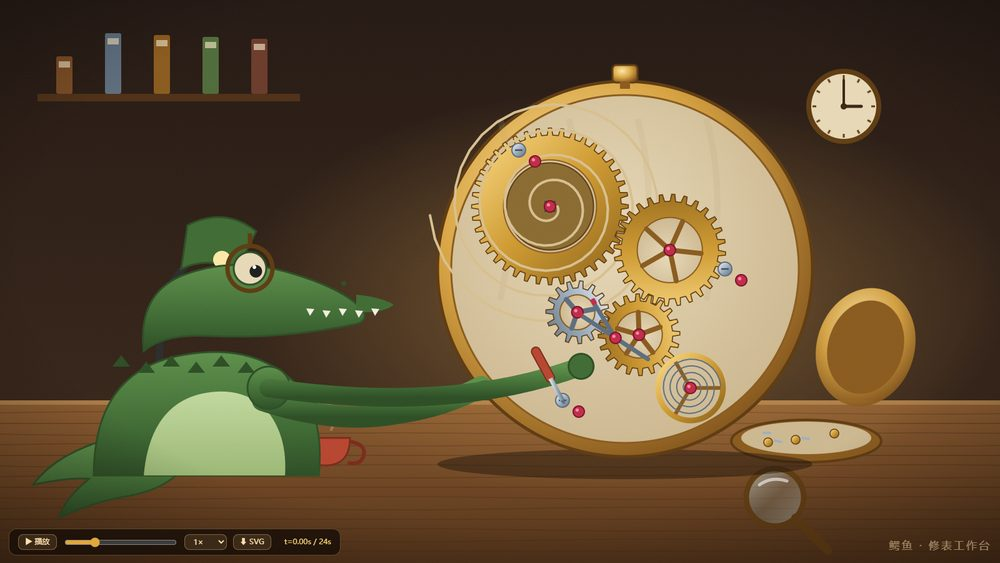
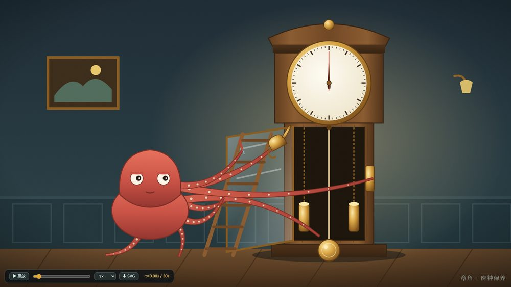

同一道题：只用内联 SVG 的几何和一条时间轴，画出动作连贯的 2D 动画。不许用 canvas、不许用图片、不许联网取素材。

点击播放 循环 20 秒
点击播放 循环 24 秒
点击播放 循环 30 秒三个页面都是打开就自己播，不用点开始。画面左下角有一条工具栏：暂停/播放、相位滑杆（拖到循环里的任意一秒定格看）、0.5× / 1× / 2× 倍速、下载当前姿态的 SVG。想安静看细节，就先拖滑杆定格。
每个文件只有一条时间轴：先算出一个统一的时间变量，所有关节、齿轮、钟摆的角度都是从它算出来的，而不是各转各的。每个会重复的动作，周期都能整除循环长度，所以循环回到开头时姿态和速度都接得上，不会"啪"地跳一下。
产物自带 qa/run.mjs，一条命令跑完三题共 30 项断言：控制台是否干净、是不是真的在动、逐帧有没有跳变、循环首尾截图差异、脚有没有离开踏板、刀尖有没有离开零件、吸盘有没有离开腕、齿比与转向、滚动是否等于弧长、钟摆周期是否符合理论值、帧率、有没有外部请求。本次结果 30 项全部通过。
擒纵机构是"齿尖扫过叉瓦"的示意画法，不是真实瑞士杠杆式的锁接与释放；章鱼腕是带粗细变化的曲线带，不是肌肉体积模拟；鹈鹕喉囊的形变是参数化曲线，不是物理模拟。这三处是作者自评最弱的地方。